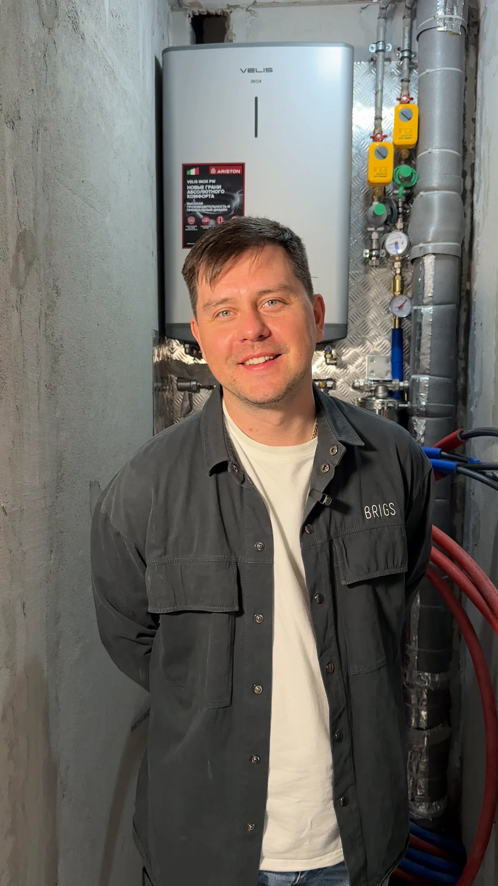
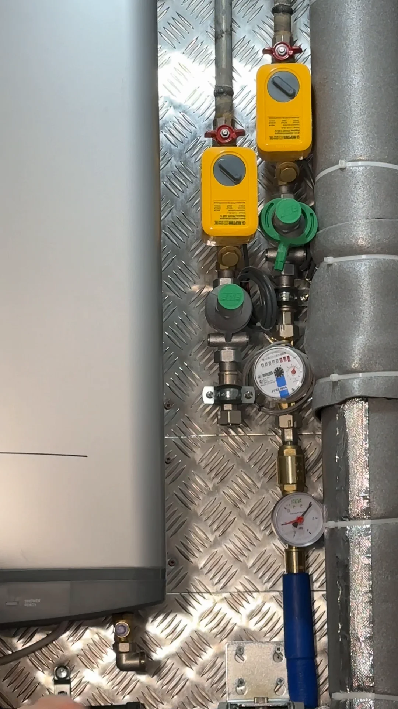
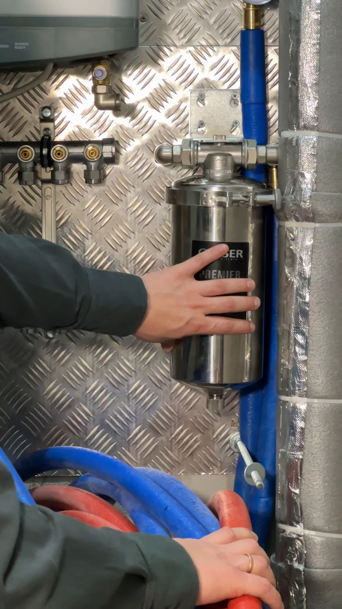
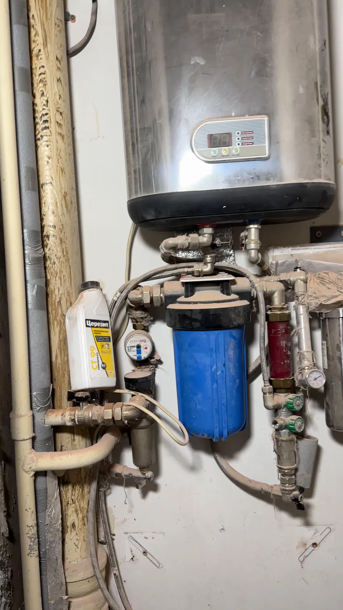
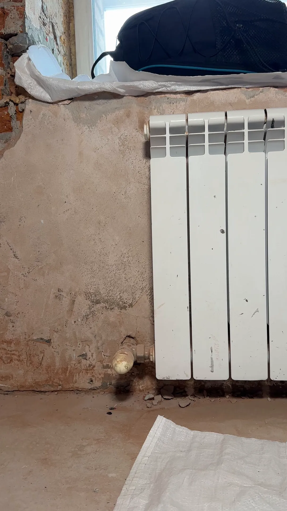

Ремонт не нужен
Только сантехника
от [ЦЕНА] ₽ за точку
- Замена труб и подводки
- Узел на вводе: счётчики, фильтры, защита от протечек
- Сантехника, радиаторы и полотенцесушители


Вся вода квартиры проходит через один узел. Разводим трубы, собираем узел на вводе, ставим защиту от протечек, сантехнику и радиаторы — отдельно или в составе ремонта.
Так собран узел на объекте в Томске: защита от протечек, счётчик, манометр и фильтр на одном листе — до того, как его закроют.
Скрытые работы
Трубы, рамы и короба видно один раз — пока стены открыты. Мы снимаем их на фото и видео и присылаем вам, прежде чем мастер закроет стену. Все кадры — с объектов в Томске.



Что делаем
Ремонт не нужен — делаем только сантехнику. Ремонт идёт — разводим трубы по техническому проекту, пока стены открыты, а сантехнику ставим после плитки.
Цены
Цену за точку и за узел фиксируем в смете. Точку считаем по месту: смеситель, унитаз, стиральная машина.
Ремонт не нужен
от [ЦЕНА] ₽ за точку
Пока стены открыты
от [ЦЕНА] ₽ за точку
Обязательный этап
Точки воды и канализации — на плане. По нему считаем точную смету и фиксируем цену в договоре.
Работаем по проекту другой студии или дизайнера.
Сделаем сами. Скидка при заказе ремонта у нас:
450 ₽/м² 900 ₽
Точную сумму считаем после бесплатного замера. Каждая работа и материал в смете отдельной строкой.
Как идёт ремонт
Приезжаем, смотрим стояки, трубы и место под коллектор.
Через 24 часа после замера, бесплатно. Каждая точка и материал отдельной строкой.
Точки воды и канализации на плане. Делаем сами или берём ваш проект.
Считаем по проекту, фиксируем цену и сроки.
Фото и видео скрытых работ присылаем до того, как стену закроют.
Проверяем систему вместе с вами. Гарантия 24 месяца.
Отзывы
Отрывки из отзывов на 2ГИС, полный текст по ссылке.
«…А сами черновые работы выполнены хорошо, прораб мне всё объяснял и все нюансы рассказывал + очень удобно, что регулярно присылают видео-отчёты о проделанных и запланированных работах.»
«…Прорабу Константину — всегда на связи, всегда объяснит и посоветует, за постоянные фото и видео с ремонта.»
«…Понравился продуманный и отработанный подход ведения проектов: на каждом этапе на связи менеджер и прораб, которые контролируют выполнение работ, делятся актуальной информацией о ремонте.»
Вопросы
Да. Приедем на замер, пришлём предварительную смету за 24 часа и сделаем только сантехнические работы.
Датчики протечки лежат на полу там, где вода появится первой. Когда датчик намокает, краны с электроприводом на вводе перекрывают воду.
Обычно в санузле у стояка, в нише или коробе с дверцей: к кранам, счётчикам и фильтрам можно подойти, не трогая отделку. Место задаём в техническом проекте.
Нисколько. Приезжаем на замер и присылаем предварительную смету за 24 часа. Точную считаем по техническому проекту и фиксируем в договоре.
Да, работаем по проекту другой студии или дизайнера. Если проекта нет, сделаем его сами.
Да. Присылаем фото и видео скрытых работ до того, как стену закроют, на связи менеджер и прораб.
Зависит от числа точек. Санузел делаем от [СРОК] дней, точный срок пишем в договоре.
24 месяца на все работы. Гарантию прописываем в договоре.
Рядом
Услуга
Услуга
Услуга
Посмотрим стояки, трубы и место под коллектор. Предварительная смета бесплатная, каждая точка в ней отдельной строкой.